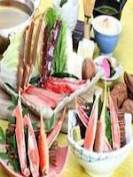
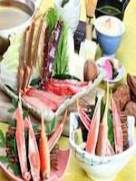

KaniDebauchery
ShinjukuHonten
Limited time! (Until March 4) Fair shabu-shabu or to recommend
Snow crab full of delicate flavor and king crab crab angrily. The moments of bliss exactly the moment to be included in the mouth with special Ponzu and your Asashide homemade, luxurious gem of these taste is confined tightly. Sweet overflowing from the body, spread in the mouth with flavor.
 

 How to eat snow crab
How to eat snow crab